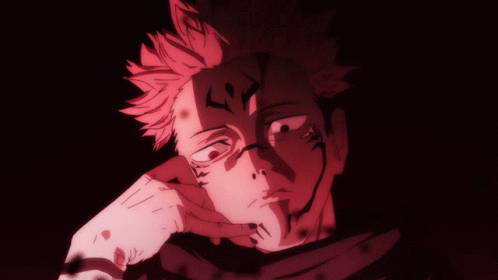

DESCRIPTION
Sukuna is a legendary cursed spirit known as the King of Curses. Sealed within the body of Yuji Itadori, Sukuna possesses immense power and a sadistic nature. With multiple sets of arms and incredible curse techniques, Sukuna is a formidable force to be reckoned with. He exudes a menacing aura and his presence alone strikes fear into the hearts of those who encounter him. Despite his malevolence, Sukuna's character is complex, with hints of a twisted code of honor. His role in Jujutsu Kaisen adds a dark and thrilling element to the story.